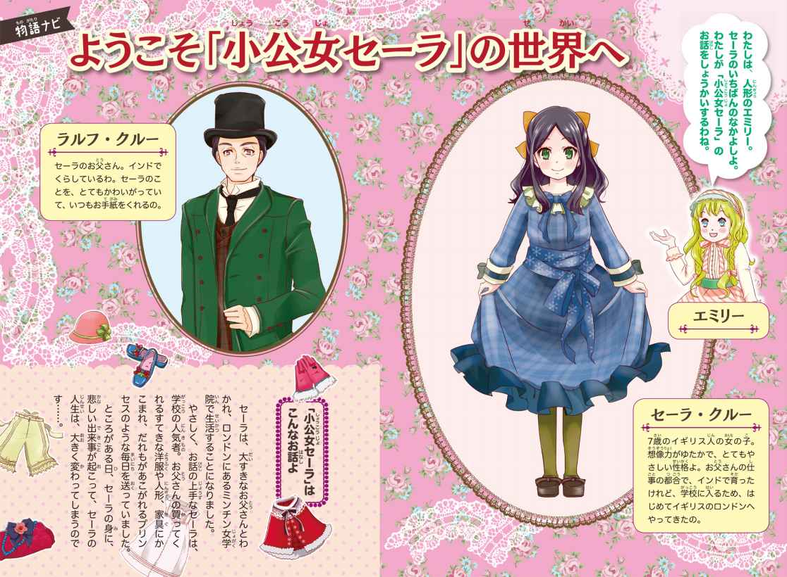
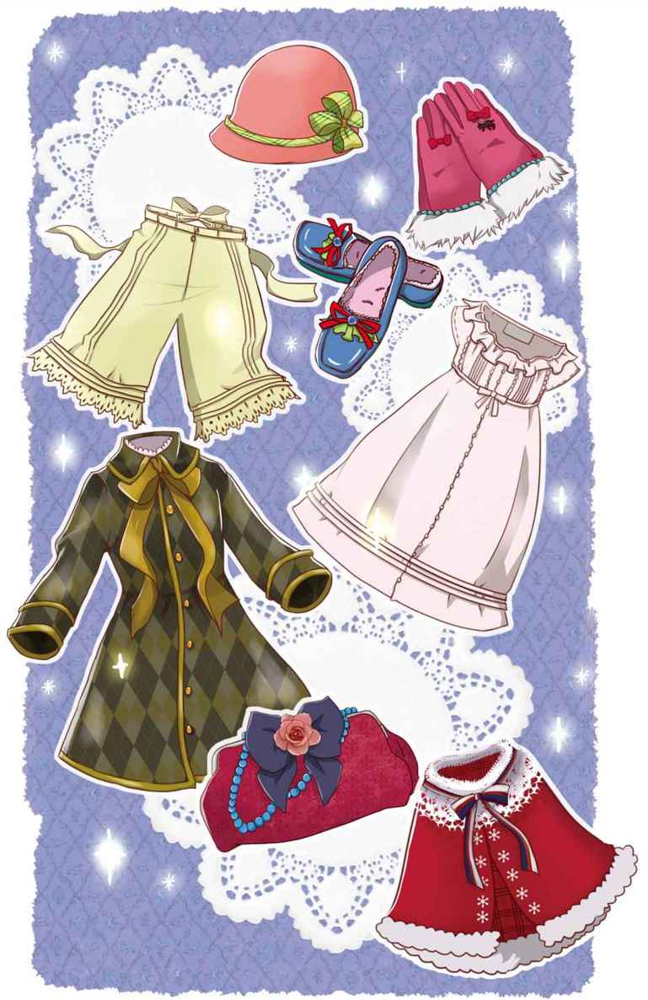
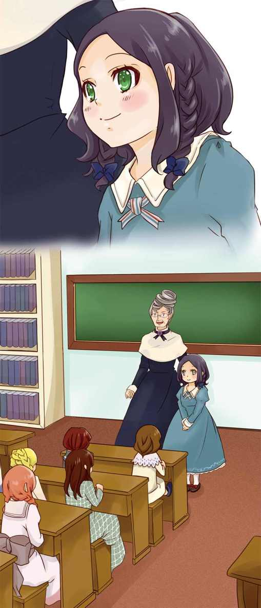
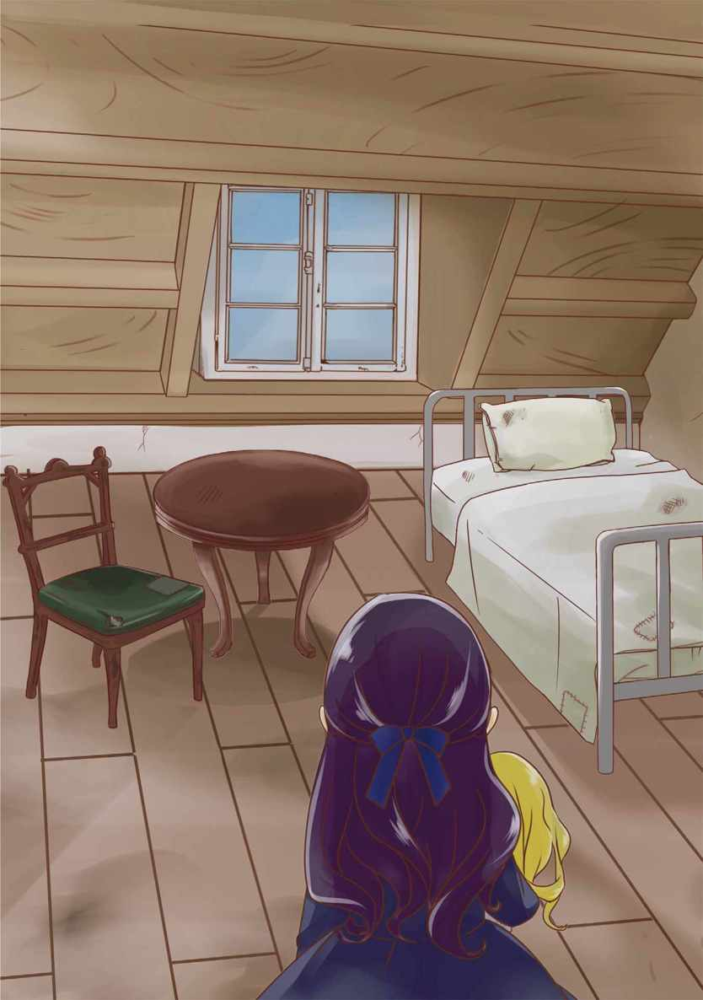

| １０歳までに読みたい世界名作7 小公女セーラ | |
| フランシス・Ｈ・バーネット | |
| (2014) | |


１インドから来た女の子
ある寒い冬の日の午後。
ひとりの小さな女の子が、お父さんと馬車でロンドンの町を走っていました。女の子の名前は、セーラ・クルー。黒いカールしたかみと、きれいな緑色の目のもちぬしです。セーラは、はるばるインドから、何か月も船に乗って、この町にやってきました。
パカッ、パカッ、パカッ！ ガラン、ガタン、ガラン......。
馬車は、ロンドンの石だたみの上を、ゆっくり進んでいきます。
セーラはまどから外を見ると、そっと、ため息をつきました。
「どうしたね？ セーラ。」
横の席から、お父さんが心配そうに、ききました。
「わたし、インドのおうちのことを考えていたの。インドは暑くて、お日様がきらきらかがやいていて、空は真っ青だったわ。でも、ここはぜんぜんちがうのね。寒くて、空ははい色で......。」
「そうだねえ。でもセーラはもう七歳だ。学校に入らなくては。」
お父さんは、やさしくセーラのかみをなでました。
セーラのお父さんはイギリス人でしたが、セーラが生まれる前から、インドで軍の仕事をしています。お母さんは、セーラが生まれるとすぐ、亡くなってしまいました。セーラには、兄弟がいません。同じ年ごろの友だちもいません。それでも、さびしいと思ったことはありませんでした。
おもちゃも本も、いっぱい持っていたし、まわりには楽しい大人がたくさんいました。何より、大すきなお父さんと、いつも、いっしょだったからです。
でも、インドには、イギリス人の子どもたちのための学校がありません。どの子も、いつかは家族とはなれて、イギリスの学校に入らなければならないのです。
セーラのお父さんは、いろいろな人に相談して、ロンドンでも、とてもいいといわれた学校に、セーラをあずけることに決めました。
「学校に入れば、いろいろなことを教えてもらえるよ。マナーも、勉強も。友だちだって、たくさん、できる。」
お父さんは、そういうと、セーラの顔をのぞきこみました。
「心配しないでいいからね、セーラ。ほしいものは、なんでもそろえてくれるように、校長先生におねがいしておく。そうだ、パパと文通しようよ。パパは毎週、手紙を書くぞ。」
（でも、でも、わたし、パパとはなれるのはいや。いっしょに、インドに帰っちゃだめなの？ ねえ、パパ。）
セーラは、そういいかけて、はっと口をつぐみました。
お父さんの目が、あまりに、つらそうだったからです。
（もしかすると、わたしよりパパのほうが、ずっとさびしいのかもしれないわ。）
セーラは、無理やり、にっこりすると、
「ええ、パパ、文通しましょうね。やくそくよ。」
と、いいました。
パカッ、パカッ、パカッ！ ゴトン、ガタン、ガタン......。
馬車は広場を通りぬけ、横の道に入りました。
そして、れんがづくりの、重々しい建物の前で止まりました。
げんかんには、金色の表札がかかり、黒い字で、
《ミンチン女学院》
と書かれています。
（りっぱな、大きいおうち。でもなんだか、暗くて、つめたくて── わたしに、のしかかってくるみたい。）
セーラは、身ぶるいしました。
「さあ、ここだよ。セーラ。」
お父さんは、ドアをノックすると、いいました。
２ミンチン校長先生
「お待ちしておりましたわ！ クルー大尉（＊）さま。」
げんかんが開き、黒い服を着た、背の高い女の人が出てきました。
「わたくしが、校長のミス・ミンチンでございます。まあ、なんておりこうそうな、おじょうさま！」
ミンチン校長先生は、セーラにわらいかけました。
セーラは思わず、あとずさりしました。
中は暗く、家具も、いかめしいものばかりです。
（この人、このおうちと、そっくり！ 見かけはりっぱで、上品そうだけど、つめたくて ── なんだか、すきになれないな......。）
でも、だまって立っていました。すると、
「こちら、妹のアメリアですわ。」
ミンチン校長先生は、太った、おとなしそうな女の人を、前におしだし、きびきびといいました。そして、
「それにしても、お人形のようにきれいな、おじょうさまですこと！」
わざとらしく、わらってみせました。
セーラは、ミンチン校長先生の目を、じっと見つめました。
（この人、うそつきだわ。わたしは、お人形みたいじゃない。金ぱつでもないし、ふっくらしてないし、えくぼもないのに。）
ミンチン校長先生はセーラにじっと見られて、少しあわてたようです。セーラからさっと目をそらすと、セーラのお父さんに、ほほえみかけました。
「この子は七歳ですが、とても頭のいい子だと思っています。」
セーラのお父さんは、いいました。
「亡くなったつまは、フランス人でした。それで、わたしは、この子にフランス語の本をよく読んでやりました。もちろん今では、自分で自由に読めます。本と勉強が大すきでしてね。何を教えても、とても、のみこみが早いのです。ただし、こちらの学校では、何より友だちをつくってほしいと思っています。インドではできなかった、とてもなかよしの友だちを、たくさん。」
「ええ、ええ。しょうちいたしましたわ、クルー太尉さま。おじょうさまは、きっと楽しい学校生活をお送りになれますよ。」
ミンチン校長先生は、セーラの頭を、ちょっとなでました。
セーラは、また、あとずさりしそうになりました。でも、がまんして、ミンチン校長先生の目をじっと見つめました。
「では、来週から、むすめをよろしくおねがいします。」
お父さんとセーラは、手をつないで、ミンチン女学院のげんかんを出ると、待たせてあった馬車に乗りこみました。
「さあ、これからお買い物だ。ドレスに、くつに、お人形。なんでもいってごらん。たくさん買おうね。」
セーラたちが帰ったとたん、ミンチン校長先生はどなりだしました。
「ああ、まったく！ なんて、にくたらしい子なんだろう。見たかい？ あの目。人の心を読むような目。七歳の子どもとは、とても思えないね。」
「え、そう？ そうかしら。だったら、お姉さま、そんなにきらいな子を、なぜ引きうけたの。」
ミンチン校長先生の妹のアメリア先生が、おずおずとききました。
「決まってるじゃないか、アメリア。あの父親が大金持ちだからよ。うちの学校では、金持ちは、いつだって大かんげい。とくに、子どものためにはお金をおしまない、大金持ちはね。」
ミンチン校長先生は、にんまりとわらいました。
セーラもお父さんも、ミンチン姉妹がこんな話をしているとは、ゆめにも思いません。二人は、ロンドンの町で、せっせとセーラのための買い物をつづけていました。
ドレスに、ペチコートに、かわいいレースのついた下着、ぼうしに、くつに、コートに手ぶくろ。全部、セーラの体に合わせて寸法を取り、できあがったじゅんに、ミンチン女学院に運ばせます。上等な絹のストッキングや、名前をししゅうしたハンカチも、どっさり注文しました。かわいいバッグも買いました。

「すごい、お買い物！ どこかの国の王女様かしらね。」
あちこちの店で、店員たちが、ささやきました。
セーラのお父さんは、セーラのためにどんどん買い物をして、少しでも、わかれのさびしさをわすれようとしていました。
セーラは、かわいい物やきれいな物が大すきです。でも、買い物がふえるたびに、お父さんとわかれる日がくるのを思いださずにはいられませんでした。
セーラとお父さんは、のこされた何日かを、ロンドンのホテルにとまり、町を見物したり、買い物をしたりしてすごしました。
「そうだ、まだ〝エミリーちゃん〟が見つかっていないねえ。」
ある朝、お父さんがいいました。
「そうね。今日もさがしに行きましょ。」
二人は、馬車に乗りました。
エミリーちゃんというのは、セーラが、これから買ってもらうことになっている、お人形の名前でした。
「わたしのエミリーはね、ふつうのお人形じゃだめなのよ。大きくても、小さくてもいいけど、本当に生きてるみたいで。パパに代わって、わたしのお話を、ちゃんと聞いてくれなくちゃ。」
セーラは前々から、お父さんに、そういっていました。
二人は馬車に乗って、ロンドンのおもちゃ屋さんを次々とさがしまわりました。でも、セーラがいうような、とくべつなお人形は、見当たりません。ところが、二人が馬車をおりて、あるおもちゃ屋さんに、入ったとたん、
「エミリーちゃんがいた！」
と、セーラがさけんだのです。
それは、ふわふわした金ぱつで青い目の、とてもかわいいお人形でした。大きさは、セーラがちょうど、だっこできるくらい。小さなえくぼがあって、きれいな長いまつ毛がついていて、青い目を開いたり、とじたりするのです。
「わたしのエミリーちゃんよ。」
と、セーラはいいました。
「もし、新しい学校で、お友だちができなくても、きっと、エミリーちゃんが、わたしの話し相手になってくれるわ。」
セーラはお父さんにたのんで、お人形のエミリーにも、自分と同じように、たくさんのドレスやくつやバッグを作ってもらいました。
レースのついた下着や、小さな絹のストッキングも。
「エミリーちゃんは、わたしのお友だちで妹よ。けがをさせないように、つれてきてもらってね、パパ。」
と、セーラはいいました。
お父さんは、にこにこと、うなずきました。
３あのね、エミリーちゃん
いよいよ、おわかれの日。セーラはお父さんといっしょに、ミンチン女学院へもどりました。お父さんは、ミンチン校長先生とアメリア先生にあいさつすると、セーラの部屋へ行きました。
セーラはお父さんのひざに乗って、大きな上着のえりをしっかりつかんで、お父さんの顔を見上げました。
「パパの顔を、ちゃんとおぼえてくれたかい。」
お父さんは、にっこりわらいました。
「ええ、もちろん。パパは、いつもわたしの心の中にいるわ。」
セーラとお父さんは、しっかりだきあいました。
セーラは、まどのそばにすわって、お父さんの馬車が見えなくなるまで見送りました。すると ──。
トントントン。だれかがドアをノックする音が聞こえます。
「セーラさん。ごきげんは？ 少しお話をしましょうか。」
アメリア先生の声が聞こえました。
「ありがとうございます。でも少し、ひとりでいたいので ──。」
セーラは、ていねいにことわりました。
そして、すみのいすにちょこんとすわった、お人形のエミリーに話しかけました。
「あのね、エミリーちゃん。パパはインドへ帰っちゃうのよ。何か月もお船に乗って。わたしがもっと大きくなって、この学校を卒業するまで、会えないの。さみしいわね。」
セーラは、なみだをこらえて、いいました。
「でも、わたし、なかないわ。わたしがないたら、パパも悲しくなるからね。二人で毎日、元気にすごしましょうね。」
そのころ、校長室では、アメリア先生とミンチン校長先生が、ひそひそと話をしていました。
「それがね、お姉さま、あの子、わたしを部屋に入れてくれなかったんですよ。『少し、ひとりでいたいので』って。でも、とてもかわいい声で、れいぎ正しい、いい方でした。」
アメリア先生がいいました。ミンチン校長先生は、まゆを上げました。
「ふん！ あの気取った、わがままむすめ！ でもまあ、父親とはなれて、なきさけばないだけ、よかったわ。」
「それにしても、見たことがないような、すばらしいドレスやくつがいっぱいよ。わたしがきのう、クローゼットにしまってあげたんですけどね。まるで、どこかの王女様が引っこしてきたみたい。」
アメリア先生は、ゆめ見るような顔をしました。
「なるほど、『王女』か。だったら外出のときには、あのセーラ・クルーを、列の先頭に立たせることにしよう。うちの学校に『王女』が入ったとなれば、この学校のいいせんでんになるからね。」
ミンチン校長先生は、にんまりとわらいました。
ミンチン女学院では、いろいろなところから来た女の子たちが、いっしょにくらし、授業を受けています。いちばん年下の子は、四歳のロッティ。いちばん年上の子は、もうすぐ十三歳になるラビニアで、いちばんいばっていました。
みんな、ゆうふくな家の子どもですが、セーラのお父さんは、とびぬけた大金持ちです。セーラとお父さんのうわさは、あっというまに学校中に広まりました。
「ねえ、ラビニア。今度入ってきた子は、どこかの王女様なんですってよ！」
ラビニアの友だちの、ジェシーがいいました。
「あら、でも本物の王女じゃないんでしょ。それに、顔やスタイルはどうかしら。きれいな子だって話は、ちっとも聞こえてこないけど。」
ラビニアは、つんとあごを上げました。
でも、本当は、とても心配だったのです。
ラビニアは、それまで、学校一お金持ちのきれいな子として、いばっていました。ミンチン校長先生につれられて、みんなで町に出るときも、当たり前のように、列の先頭を歩いていたのです。でも、今度来た子が、本物の王女みたいなら......。
「あしたの授業が楽しみね。」
ラビニアは、わざと強がりをいいました。
４フランス語の授業
そして、次の朝。
セーラはメイド（＊１）のマリエットに、かみをお下げにゆってもらいました。それから、部屋のすみのいすにすわっている、お人形のエミリーをだきあげて、フランス語でいいました。
「エミリーちゃん。あなたもマリエットさんに、かみをお下げにしてもらってね。リボンは、こん色がいいわ。わたしはこれからお勉強なの。あなたは、ここでご本を読んで、おとなしく待ってるのよ。」
フランス人のマリエットは、びっくりしました。なんとまあ、上手なフランス語でしょう。それに ── 。
「あのう、おじょうさま。お人形に人間の言葉がわかるんですか。」
セーラは、にっこりわらって、うなずき、英語でつづけました。
「もちろんよ。お人形はみんな、いろんなことができるの。本も読めるし、おしゃべりするし、歩くこともできるのよ。でもね、人間に知られたら、めんどうでしょ。だから、ひみつにしておきましょって、お人形同士が話しあって、決めてるの。」
（まあ、なんてかわった、おじょうさんかしら。）
マリエットは、目をぱちくりさせました。でも、かわいい顔で、にこにこしている、きれいな緑色の目のセーラを、いっぺんですきになったのです。
セーラは、マリエットとお人形のエミリーに手をふると、下の教室に下りていきました。いよいよ、ミンチン女学院でのはじめての授業です。
「みなさん。こちらはインドからいらした、セーラ・クルーさんです。なかよくしてくださいね。」
ミンチン校長先生は、セーラを立たせるといいました。

「あれが王女様？ 王女様にしては、やせすぎてるわね。」
「かみも金ぱつじゃないわ。黒くて、ちょっとちぢれてる......。」
「でも、とってもきれいな緑色の目よ。」
あちこちから、ひそひそとささやく声が聞こえました。
セーラは、にっこりわらって、だまっていました。こんなに大ぜいの女の子を見たのは、はじめてです。
（この中に、本当のなかよしになれる子がいたら、いいな。）
セーラは、ひとりひとりの顔を見ながら、わくわくしていました。
すると、ミンチン校長先生がいいました。
「それでは、一時間目はフランス語です。セーラさんは、フランス語が苦手でしたね。」
「いえ、あの......。」
さあ、なんといったらいいのでしょう。セーラはこまってしまいました。この間、セーラのお父さんは、校長先生にいったはずです。セーラは、フランス語の本が自由に読めますと。
ミンチン校長先生は、それを聞いていなかったのでしょうか。
それとも、うっかりわすれているのでしょうか。
セーラがもじもじしていると、
「みえをはらなくても、よろしい。この学校には、すばらしいフランス語の先生がおいでです。では、デファルジュ先生。この子に新しい教科書をわたしてやってくださいませ。」
教室の入り口に立っている、白いあごひげの先生にいいました。
「どうぞ、おじょうさん。これは、やさしいフランス語の本です。フランス語、むずかしい？ でも、きっとすきになりますよ。」
デファルジュ先生は、本を開くと、声を出して読んでみせました。
「ジェーム・デ・ガトー。わたしは、おかしが、すき。まねして。」
「ムッシュー！（＊２）」セーラは思いきって、フランス語でいいました。
「わたしの亡くなったママは、フランス人でした。パパとはいつも、フランス語で話していました。パパは、校長先生に、わたしが自由にフランス語の本を読めると、お話ししました。」
デファルジュ先生はびっくりしました。こんな小さな子が、こんなに美しいフランス語を、すらすら話すとは！

「校長先生！ このおじょうさんのフランス語は、かんぺきですぞ。」
デファルジュ先生は、楽しそうにいいました。
フランス語がとても苦手な、ミンチン校長先生は、ますますふきげんになりました。
「セーラさん！ どうしてもっと早く、いわなかったのです！」
真っ赤な顔で、セーラを問いつめました。
「パパがさいしょの日、校長先生にお話ししました。ですから......。」
セーラは、一生けん命いいました。でも、ミンチン校長先生は知らん顔です。さっとセーラに背を向けると、カツカツと、くつ音を立て、教室から出ていってしまいました。
後ろの席で、だれかがくすくすわらいました。いちばん年上のラビニアです。
５アーメンガード・セント・ジョン
フランス語の授業が終わりました。セーラは席を立つと、
「ええと......はじめまして。お名前、教えてくれる？」
近くにいた、同じくらいの年の子に、声をかけました。
ふっくらした体つきの、やさしい、おとなしそうな子です。
「わたし？ アーメンガードよ。アーメンガード・セント・ジョン。セント・ジョンは、名字だけど。長ったらしいでしょ？」
その子は、はずかしそうに、いいました。
「いいえ、とっても、すてきな名前。小説の主人公みたい！」
「ほんとに？」
アーメンガードの顔が、ぱっとかがやきました。でもすぐ、しょんぼりかたを落とすと、つづけました。
「わたしって、のろまで、頭が悪くて、勉強ができないの。フランス語は、とくに苦手なの。あなた、フランス語が、とっても上手なのね。」
「ありがとう。いつも使っていたからなのよ。それより、アーメンガード ── 。」
セーラは、いいました。
「今から、わたしのお部屋へ来ない？ エミリーにしょうかいするわ。」
「エミリーって、だれのこと？」
「いいから、しずかに。」
セーラは、部屋の前に来ると、さっとドアノブを回し、ドアを開けました。
広い部屋は、きちんとかたづいて、とてもしずかです。
聞こえてくるのは、パチパチもえる、だんろの火の音だけ。
部屋のおくのいすの上には、金ぱつのかわいいお人形が、本を手にして、おぎょうぎよく、すわっています。
「ただいま、エミリーちゃん。こちら、アーメンガードさんよ。アーメンガードさん。こちら、エミリー。だっこしてみる？」
セーラは、お人形のエミリーを、いすからそっとだきあげると、アーメンガードに見せました。
アーメンガードは大よろこびで、エミリーをだっこしました。
二人はだんろの前にすわって、話を始めました。
セーラはアーメンガードに、インドからの船旅のことや、するするとマストを登り下りする、それはすばしっこいインド人の水兵さんたちのことを話しました。自分で作ったお話も、お人形のひみつも、聞かせてあげました。
そう、メイドのマリエットにも教えてあげた、あのことです。
「お人形はみんな、いろんなことができるの。本も読めるし、おしゃべりするし、歩くこともできるのよ。でもね、人間に知られたら、めんどうでしょ。だから、ひみつにしておきましょって、お人形同士が話しあって、決めてるの。」
「わあ、すてき！」
アーメンガードは、目をきらきら、かがやかせました。
ちょうどそのとき、セーラのまぶたに、あついなみだがこみあげてきました。お父さんにエミリーを買ってもらった日のことを、急に思いだしたのです。
「ねえ、アーメンガード。あなたも、お父さまが大すきでしょ？」
セーラは、アーメンガードにききました。
「どうかなあ。わからないわ。」
アーメンガードは、こまったようにいいました。
「うちのパパは学者で、とても頭がいいの。だからいつでも、わたしに、勉強しなさいって、うるさいの。勉強、きらいなのに。」
「わたしはね、パパが大すきなの。世界中でいちばんすき。」
セーラは、まぶたを、そっとおさえていいました。
「わたし、パパに会えなくて、とってもさみしいの。でも、がまんするわ。わたしが、さみしがると、パパもさみしくなるから。」
アーメンガードは、ちょっと考えると、こういいました。
「だったら、ええと ── わたしと、お友だちになってよ。お友だちがいれば、少しはさみしくなくなるかもしれないし ── 。」
セーラの顔が、ぱっと明るくなりました。
「お友だちになってね、アーメンガード。なかよしになって。」
二人は、しっかり、手を取りあいました。そのとき、
カラン、カラン、カラン！
お昼ごはんのかねが鳴りました。
６小さなロッティ
こうして、セーラは、少しずつ、ミンチン女学院の生活になれていきました。
インドにいるとき、本をたくさん読んでいたので、勉強はたいしてむずかしくありません。セーラはすぐに、学校一成績のいい子になりました。
セーラは、自分が大金持ちの子だということを、よくわかっていました。学校中でいちばん広い部屋を使っていますし、ふだん着も、ドレスもくつも、ほかの子たちとはくらべものにならないくらい、ごうかです。でも、それをじまんすることは、まったくありませんでした。
セーラにとって、お金があるのは、いいことでも、悪いことでもありません。当たり前のことだったからです。成績がいいのも、インドで先に勉強してきたからだと思っていました。
ひとりっ子だったので、小さい子たちが妹のように、かわいくてたまりません。小さい子たちも、やさしいお姉さんのようなセーラが大すきになりました。
そして、どこからつたわったのでしょう。セーラのお話を聞きたがる子が、どんどんふえていったのです。
セーラは本当に、お話上手でした。インドのお話も、本で読んだ物語も、自分で作ったお話も、よろこんで話してあげました。
セーラは、ますます、学校の人気者になりました。
でも、もちろん、なかにはセーラをきらいな人もいたのです。
その代表は、ラビニアです。
ラビニアは、セーラに学校一の座をうばわれたのが、くやしくてたまりません。なにかというと、意地悪なことをいったり、かげぐちをいって、仕返しをしようとしました。
もうひとりは、ミンチン校長先生です。
ミンチン校長先生は、教室では、せっせとセーラをほめました。でもそれは、セーラが大金持ちの子どもだからです。
校長室に帰ってくると、妹のアメリア先生に向かって、
「ああ、いやだ。あの気取ったわらい方！ まるで、どこかの王女のような、落ち着きはらった、たいど。ぞっとするよ。」
にくにくしげに、頭をふると、いいました。
そんなある日。セーラが、ある部屋の前を通りかかると、
「いやあよお！ いや、いや！ あっちいって！」
小さな女の子の、ものすごいわめき声が聞こえてきました。
ドアのすきまから、そっとのぞくと、学校でいちばん年下のロッティが、部屋の真ん中にあお向けになって、手足をばたばたさせています。それを、ミンチン校長先生とアメリア先生が、二人でこまったように、見下ろしているのです。
「いやいや、いや！ なんで、ロッティだけ、ママがいないの？」
ロッティのお母さんは、ロッティが生まれるとすぐに、亡くなりました。ロッティはときどき、さびしくなると、こうして、大あばれをするのです。
「おだまり！ むちでぶたれたいの？」
ミンチン校長先生が、ついに、むちを取りあげようとしました。
セーラは、あわてて入っていくと、
「あのう、すみません。ロッティをさがしていたもので。わたしとお話し、させていただけますか。」
とききました。ミンチン校長先生が、しぶしぶうなずくと、セーラは、なみだだらけのロッティの顔を、そっとのぞきこみました。
「セーラ！ セーラ！ ママがね、ママがいないの！」
ロッティは、なきじゃくります。セーラは、しずかにいいました。
「わたしも、ママがいないのよ、ロッティ。」
ロッティはびっくりしたように、なきやみました。
「でもママは、お空の上のどこかから、いつでも、わたしを見ていてくれるわ。あなたのママもきっと、そうよ。もしかしたら、今だって、二人でわたしたちのこと、見てるかもしれないわ。」
ロッティは、ぴたりとなきやみました。
「じゃ、わたしが、ロッティのママになってあげましょうか。お人形のエミリーちゃんは、あなたの妹になりたいって。」
ロッティは、大よろこびで、はねおきました。
その日からロッティは、セーラを《セーラ・ママ》とよぶようになりました。
７下働きのベッキー
セーラがミンチン女学院に入ってから、二年がたちました。
これもまた、寒い冬の日。町に行ってきたセーラは、上等のビロード（＊）のコートを着て、馬車からおりました。ふと目を上げると、学校の調理場のまどから、ひとりの少女がじっと、こちらを見ています。
セーラはにっこりわらって、手をふりました。とたんに、少女は、あわてて首を引っこめてしまいました。
みすぼらしい身なりで、顔もよごれています。でも、目がくりくりした、かわいい子です。
（何かいいたそうだけど ──何かしら。）
セーラは首をひねりました。でも、さっぱり、わかりません。
ところが、その日の午後おそく。セーラが教室のだんろのそばで、みんなにお話をしていると、昼間見たあの少女が、おずおずと入ってきたのです。
少女は、石炭が入った箱を重そうに下ろし、だんろに、ゆっくりと石炭を足しはじめました。セーラのお話のじゃまをしないように、気をつかっているようです。でもそのうち、セーラは気づきました。
少女は、セーラの話を聞くために、わざとゆっくり手を動かしているのです。すると、ラビニアがするどい声でささやきました。
「まあ、いやだ！ あの子、聞いてる！」
少女はあわてて石炭箱を持ちあげ、走って教室を出ていきました。
「どうして、あの人が聞いちゃいけないの！」
セーラは、思わず声をあらげ、ろうかに走りでました。でも、少女のすがたはもう、どこにもありません。
そのばん、セーラは、メイドのマリエットにたずねました。
「あのね、だんろの火をおこしに来る人、知ってる？」
「ああ、それは、下働きのベッキーですわ。下働きというのは、使用人の中でも、いちばん下の人たちで、なんでもさせられます。」
マリエットは、いいました。そして、ベッキーは十四歳で、最近やとわれた子だと教えてくれました。
さて、それから二週間ばかりたった、やはりとても寒い日。
授業から部屋に帰ってきたセーラは、あっとおどろきました。だんろの横のいすで、あのベッキーという少女が、口を開けて、ねむりこけているのです。石炭箱を横においたまま、顔もエプロンも、石炭のこなだらけにして。セーラがそっと顔をのぞきこんでも、少女はぴくりともしません。

（かわいそうに、とてもつかれているのね。でも、アメリア先生が見回りに来たら、どうしよう......。）
カタンと、石炭がくずれる音がして、少女はとびおきました。
「お、おじょうさま！ 申しわけございません、おゆるしを。」
「いいの、いいのよ、つかれてたのね ── ベッキー。」
セーラは、あわてていいました。
「わたしの名前をごぞんじなんですか、おじょうさま。」
「ええ。マリエットにきいたの。そうだわ、これ、いかが？」
セーラはにっこりわらうと、とだなからクッキーを取りだしました。
「おじょうさま！ そんな、もったいない。」
ベッキーが、なきだしました。
「いいから、ごえんりょなく。それより、今日の仕事はもう終わり？ だったらここで、もう少し、休んでいらっしゃいよ。」
「え？ でも、アメリア先生に見つかったら ── 。」
「だいじょうぶ。わたしがなんとかするわ。ゆっくりめしあがれ。」
セーラはやさしくいいました。
ベッキーは、クッキーを食べおわると、いいました。
「わたし ── わたし、一度だけ王女様を見たことがあるんです。おじょうさまは、王女様とそっくりですよ。」
セーラは、なんといっていいか、わかりません。それで、
「ねえ、ベッキー。あなた、もしかして、この間、わたしのお話を聞いてくれてた？」
と、たずねました。ベッキーは、うなずきました。
「すみません。わたし、おじょうさまのお話が大すきで。」
「だったら、また、いらっしゃいよ。うまく時間が合えば、わたし、お話のつづきを聞かせてあげられるわ。」
セーラは、いいました。
「ありがとうございます。お休みなさいませ、おじょうさま。」
ベッキーは、すっかり元気になって帰っていきました。
８ダイヤモンドの鉱山
それから、しばらくたった、ある日。
セーラのもとへ、インドのお父さんから、びっくりするような手紙がとどきました。
お父さんの友だちが、インドで、ダイヤモンドの鉱山を見つけたというのです。でも、ダイヤモンドをほりだすには、たくさんお金がいります。そこで、その友だちは、お父さんにもぜひ、お金を出してほしいとたのみました。
「......パパは、もちろん、いいよといいました。もうすぐ、ダイヤモンドがたくさん、ほりだせるでしょう。そうしたらセーラは、今の何百倍もお金持ちになるんだよ。ミンチン校長先生にも知らせましたが、楽しみに待っていておくれ。
愛するセーラへ パパより」
お父さんの手紙には、そう書いてありました。
ダイヤモンドといえば、いちばん価値がある宝石です。
セーラが、今よりもっと大金持ちになると知ったミンチン校長先生は、大よろこびです。
セーラもわくわくしました。かがやく宝石が、どんどん出てくる山なんて、アラビアンナイトみたいだと思ったのです。
セーラは、休み時間に、学校のみんなの前で、鉱山の絵をかいてみせました。それは、地下にほられた迷宮のようなもので、かべには一面、きらきら光る石がはりついている絵です。大ぜいの人が、つるはし（＊）をふりあげて、その石をほろうとしています。
「すごいね！ すごいね！ セーラ・ママ。」
セーラを「ママ」とよぶようになったロッティは、大はしゃぎ。
「きっときれいね、セーラ。」
アーメンガードも大はしゃぎです。
でも、いばりやのラビニアは、つんと横を向きました。
「ああ、ばかばかしい。そんなに大金持ちになってどうするの。もしかして、本物の王女にでもなる気かしら。」
「きっと、そうよ。今だって王女様のつもりらしいけど。」
ラビニアといつもいっしょにいる、ジェシーがいいました。
「王女様！ セーラ王女様。ごきげんよう！」
ラビニアとジェシーが、声を合わせてからかいました。
セーラは、かっとしました。でも、しずかな声でいいました。
「わたしは、王女じゃないわ。でもね、心はいつでも王女のようにありたいと思っているの。王女ならどうするか、と考えるのはとても楽しいことだし、大切なことよ。」
ラビニアもジェシーも、ぽかんとしています。
アーメンガードとロッティが、パチパチと手をたたきました。
ダイヤモンドの鉱山の話は、下働きのベッキーの耳にも入っていました。セーラは、ベッキーにも鉱山の絵を見せました。
「でも、まず火の前であたたまってね。あなた、とても寒そうだもの。それから、これ、あとでどうぞ。」
小さなクッキーを、ベッキーのエプロンのポケットに入れました。
「おじょうさまは ── やっぱり、王女様です！」
ベッキーはポケットをしっかりおさえて、部屋を出ていきました。
もうすぐ、セーラの十一歳のお誕生日がやってきます。
お父さんからは、お誕生日のプレゼントに、お人形は、どうかな、という手紙が来ました。
「愛するセーラ。パパはお誕生日のおいわいに、新しいお人形をプレゼントしようと思います。でも、きみはもうすぐ十一歳だ。お人形なんか、いらないかな？ パパに返事をくださいな。」
セーラはすぐに返事を書きました。
「愛するパパ。お気づかいありがとう。よろこんでお人形をいただきます。でもね、お人形はこれだけにしてくださいな。あまり大ぜいになると、わたし、めんどうを見てあげられなくなるわ。お人形ってね、本当は、ひとりでなんでもできるのよ。でも、人間に何かをさせるのが大すきなの！ セーラより」
９悲しいお誕生日
セーラの誕生日がやってきました。セーラはその日、すてきなピンクのドレスを着て、ミンチン校長先生のあとから、クリスマスツリーのかざられた教室に入っていきました。セーラのあとには、プレゼントの箱をささげもった使用人が三人、ついてきます。
三人目はミンチン校長先生の命令で、この日のために、新しいぼうしとエプロンをつけさせられた、ベッキーです。
「みなさん、おしずかに。」
ミンチン校長先生が、みんなを見わたすと、いいました。
「セーラ・クルーさんは、今日十一歳になりました。そこで、インドにいらっしゃるお父さまから、みなさんをおまねきして、おいわい会をしてほしい、というお話があったわけです。」
ミンチン校長先生は、気取ってわらうと、つづけました。
「ごぞんじのとおり、セーラさんのお父さまは、たいへんなお金持ちでいらっしゃいます。しかも、このたびインドでダイヤモンドの鉱山を発見されました。セーラさんはしょうらい、今以上のたいへんなお金持ちになります。これは、そのおいわいでもあるのです。みなさん、セーラさんにおいわいと、お礼をいいましょう。」
「セーラさん、おめでとう！ おまねき、ありがとう！」
みんなが、声をそろえていいました。
（まあ、なんて大げさな......。）
セーラは、心の中でため息をつきました。でも、
「ありがとうございます。よくいらっしゃいました。」
ドレスのすそをちょっとつまむと、おじぎをしました。
「では、プレゼントを開けて。あとは楽しくお遊びなさい。」
ミンチン校長先生は、つんとあごを上げ、教室を出ていきました。
みんながたちまち、プレゼントの箱の前にかけよりました。
セーラは三つの箱のリボンを、次々と、ときました。
「わあ、大きなお人形！ ロッティぐらいあるわよ。」
だれかが、声を上げました。
「これ、お人形さんのトランクよ。ドレスがたくさん入ってる。」
べつのだれかがさけびました。それだけではありません。バッグにくつ、ぼうしに手ぶくろ、ハンカチ、オペラグラス。このお人形は、人間の女の子がほしがるような物は一つのこらず、持っています。
「いいわねえ、こんなにすごいプレゼントがもらえて。」
だれかが、ため息をつくのが聞こえました。そのとき ── 。
「セーラさん！ セーラ・クルーさん！」
アメリア先生が、真っ青な顔でとびこんできました。
「すぐにお部屋へもどって、黒い服に着がえなさい。それから校長室へ行って。あなたのお父さまが ──亡くなりました。」
「パパが亡くなった？ パパが死んだ？ どうして？ ねえ、どうしてなの？ エミリーちゃん！」
セーラは、部屋にかけもどると、お人形のエミリーをだきしめて、ぶるぶる、ふるえだしました。
「エミリーちゃん、聞いて！ パパが亡くなったの。パパが、この世から、いなくなっちゃったのよ。ねえ、この間、お手紙をもらったばかりなのに。どうして ── どうしてなの？」
でも、お人形は何もいってくれません。青い目で、じっとセーラを見つめるだけです。セーラはわっとなきだしました。
でも、なくだけなくと、少し気を取りなおしました。
セーラが大すきな物語の王女様たちはみんな、何があっても、しっかり落ち着いていることを、思いだしたのです。
セーラは、マリエットにてつだってもらわず、ひとりで黒い服に着がえ、エミリーをだいて、校長室へ行きました。
「ミンチン校長先生、わたしのパパが ── ？」
「ええ、そのとおりです、セーラ・クルー。あなたのお父さまは亡くなりました。インドで、熱病にかかって。しかも、お金をまったくのこさずに！ 先ほど、お父さまの弁護士が、知らせてきました。」
ミンチン校長先生は、目をつりあげると、つづけました。
「ダイヤモンドの鉱山はしっぱいし、お父さまの友だちが、お金を全部持って、にげだしたのだそうです。あなたのお父さまは死にました！ あなたにお金をまったくのこさず。」
セーラは、目の前が、くらくらするのを感じました。
お金のことはともかく、お父さんが死んだ、本当に死んだ、とわかったからです。
「もちろん、授業料をはらえない子を、ここへおいておくわけにはいきません。でも今、あなたを追いだしたら、学校のひょうばんにかかわりますからね。」
ミンチン校長先生は、つめたい声でいいました。
「明日から、あなたを下働きとして、やとってあげることにしましょう。ありがとうございます、は？ セーラ。」
「どうして、ありがとう、なのですか。」
セーラの口から、思いがけない言葉がとびだしました。
「なんですって。」
ミンチン校長先生は、ますます目をつりあげると、どなりました。
「お金のない者が、親切にも、家と食べ物をめぐんでもらうのですよ。ありがとう、というのが、当たり前でしょう！」
セーラは、ミンチン校長先生の目をじっと見ると、しずかにいいました。
「校長先生のお申し出は、本当の親切だと思えません。それに、ここはわたしの家でもありません。ですから、お礼は申しあげられません。」
ミンチン校長先生は、ゆかをふみならして、さけびました。
「な、なんと、生意気なことを。おまえはもう、王女様じゃないんだよ、セーラ・クルー。おまえにはもう、親はいない。お金だってない。今までみたいにのんびり、ぜいたくな生活をしているわけにはいかないんだ！」
そして、セーラをにくらしそうに、にらむと、つづけました。
「おまえのメイドのマリエットはさっき、やめさせた。でもね、今日のパーティーの費用は、まだはらってもらっていない。仕方ないから、おまえの持ち物を引きとることで、がまんしよう。さあ、その人形もわたしなさい！」
「いやです！」
セーラは、思わず大きな声で、いいかえしました。
「ほかの物は、かまいせん。でも、エミリーは、パパといっしょに買いに行ったお人形です。わたしの大事な家族です。ぜったい、おわたしするわけには、いきません。」
ミンチン校長先生は、ふうっと息をつくと、ひくい声でいいました。
「さっさと屋根うら部屋へ行きなさい。その、ばかみたいに、ぜいたくで、すましかえった人形といっしょに！」
10新しい生活
そのときから、セーラの新しい生活が始まりました。
セーラは校長室から出ると、まず自分の部屋に行こうとしました。でも、部屋のドアの前には、アメリア先生がいて、
「ここはもう、あなたのお部屋じゃないの ...... 。」
と、申しわけなさそうにいうのです。セーラは仕方なく、そのまま屋根うら部屋へ上がりました。そして、思わず息をのみました。
（これが、わたしの ──新しいお部屋？）

なんとせまい部屋でしょう。ななめの天じょうが、すぐ上に見えます。家具といえば、古い小さなベッドと、いすと、つくえだけ。セーラは人形のエミリーをだいたまま、立ちすくんでしまいました。
しばらくすると、セーラはエミリーを横に下ろし、のろのろとベッドにこしかけました。
夜おそく、小さなノックの音がしました。ベッキーです。
ベッキーは、持ってきたおぼんを、急いでつくえの上におくと、
「おじょうさま ── お気のどくに。」
セーラをしっかりだきしめました。
セーラは、ただだまって、ふるえているだけです。
「おじょうさま、さあ、一口だけでも、お飲みになって。」
ベッキーは、手早くセーラにお茶を飲ませ、お人形のエミリーといっしょに、ベッドにねかしつけました。
「目をとじて。きっとお休みになれますよ。わたしは、おとなりの部屋に、いますからね。」
けれども、セーラはそのばん、少しもねむれませんでした。
目をとじても、やさしかったお父さんの顔がうかんでは消えます。
（パパが死んだ、パパが死んだ。......パパはもう、いない......。）
長い夜が明け、食堂に下りていくと、セーラの席にはラビニアがすわっています。ミンチン校長先生がこちらを見て、いいました。
「セーラ、すぐに、小さい子たちの食事の世話をしなさい。あとでフランス語も見てやるのよ！」
調理場に行くと、さっそく調理係がうれしそうに命令しました。
「さあ、セーラ。やおやへ行って、りんごを五十こ買っておいで。いや、ベッキー、おまえじゃない。セーラが行くんだ、王女様が！」
まどからふと、表を見ると、自分の家具やドレスの箱がどんどん、運びだされています。ミンチン校長先生がさっさと売りはらったのです。お父さんがお誕生日のおいわいにくれた、フランスのお人形も、きっと、売られていくのでしょう。
（かまわないわ。わたしにはエミリーがいるもの。）
セーラは、さっと顔を上げ、買い物かごを取りあげました。
調理係だけではありません。メイドたちもみんな、つらい仕事は全部、セーラにおしつけます。
でもセーラは、決して、いやな顔も悲しそうな顔もしません。
「がんばるわね。わたしがないたら、天国のパパが悲しむもの。」
毎ばん、つくえの上のエミリーにそういって、ベッドに入りました。いつも同じ服を着て、みんなの部屋を回るときも、決してうつむきません。しっかり前を向いて、元気に歩いていきます。
「ダイヤモンドの鉱山はどうしたのかしら、王女様？」
ある日、教室のだんろに石炭を足しにいくと、ラビニアが、わざと大声でいいました。セーラは、知らん顔をしていました。
ほかの子たちは、そんな意地悪なことはいいません。でもみんな、セーラを見ると、こまったように横を向いてしまいます。
あんなになかよしだったアーメンガードまで、遠くからじっと、こちらを見ているだけです。セーラはなんだか、はらが立ってきました。
（この学校には、友だちなんて、ひとりもいなかったんだわ。）
セーラはいつしか、下を向いて歩くようになりました。
生徒とすれちがうと、自分から目をそらすようになりました。
人の目をまっすぐ見ないと、人の心はわからないものです。
セーラは、アーメンガードが、自分のことを、どれほど心配してくれているかが、わかりませんでした。
アーメンガードは、とつぜん下働きにされたセーラが、気のどくでたまりませんでした。セーラを見ると、かけよって声をかけようとしました。でもそのたびに、そっぽを向かれるのです。
おとなしいアーメンガードには、それ以上、どうしていいかわかりません。遠くから、おずおず見ているしかなかったのです。
（セーラは ── もう、友だちじゃなくなっちゃったの？）
アーメンガードは、どんどん元気をなくしていきました。
一か月がたちました。セーラの話し相手は、今では、ベッキーとお人形のエミリー、そして屋根うら部屋のネズミと、外のスズメだけです。
あるばんおそく、セーラが、いつものように、ネズミにパンくずをあげていると、小さなノックの音が聞こえました。
「ベッキー？ どうぞ入って。お仕事、終わった？」
「ちがうの ── セーラ、わたしよ。わたしなの。」
ドアを開けて入ってきたのは、なんと、目を真っ赤になきはらした、あのアーメンガード・セント・ジョンです！
11屋根うら部屋のお客さん
「だめよ、アーメンガード！ ここに来ちゃだめ。ミンチン校長先生にしかられるわ。」
セーラは、あわてていいました。でもアーメンガードは聞きません。
「いいの。そんなのかまわない！ わたし、知りたかったのよ、セーラ。どうして、わたしのこと、さけるの。もう、わたしのこと、きらいになっちゃった？ わたしたち、もう、友だちじゃないの？」
鼻の頭まで真っ赤にして、おいおいなきつづけます。
「まさか！ ...... でも、わたし ...... 。」
セーラは、一生けん命、説明しようとしましたが、うまく説明できません。でも、きっぱりといいました。
「友だちよ、もちろん。」
「ああ、セーラ！」
アーメンガードが、セーラのむねにとびこんできました。二人はしっかりだきしめあいました。セーラのほほを、温かいなみだが次々とつたっていきます。すると ── 。
「でも、ここって、あのう ── すごいお部屋ね。」
アーメンガードが、えんりょがちにいいました。セーラは思わずなみだをぬぐって、ふきだしました。そして、
「いいのよ、アーメンガード。ここは、せまくて暗いお部屋よ。でも、エミリーがいるし、おとなりにはベッキーがいるし、そうだわ！」
いきなり、トトトと、したを鳴らしました。
チューチューとかわいい声がして、部屋のすみから、一ぴきのネズミがあらわれました。
「しょうかいするわね、わたしのなかよしのネズミさん。一家のパパよ。」
アーメンガードは、ほっとため息をつきました。そして、まじまじとセーラの顔を見ると、ききました。
「セーラ。あなた ── おなかがすいているんじゃない？」
「いいえ、そんなこと......。」
とたんに、セーラのおなかが、ぐうっと鳴りました。
「ちょっと、待ってて。うちから送ってきたおかしがあるの。」
アーメンガードは、さっと部屋を出ていくと、十分後、大きなケーキの箱をかかえてもどってきました。
そのばん、セーラとアーメンガードとベッキーは、セーラの屋根うら部屋で、大急ぎで、ひみつのお茶会をしました。
その日から、セーラはまた、明るい心を取りもどしました。
元気にしていると、どんどん、いいことがつづくようです。
夕方には、屋根うら部屋にまた、お客さんがやってきました。
小さなロッティです。ロッティはトントンと、ドアをノックして、
「ごきげんよう！ セーラ・ママ。エミリーちゃんも、お元気？」
と、にっこりわらいました。セーラはびっくりしました。
「まあ、ロッティ！ どうして、ここがわかったの。」

「だって、ロッティは、もう七歳よ。セーラ・ママ。ママが上のお部屋にお引っこししたのも知ってる。でもここ ── ひどい！」
ロッティは、あたりを見回し、かわいいまゆをひそめました。
セーラは、思わず大きな声でわらいだしました。
「ほんとね、ロッティ。でも、ちょっと目をとじて、想像してみて。ここにはほんとは、すてきなじゅうたんがしいてあって、大きなだんろに、パチパチ火がもえてるの。ね？ どう？」
「うん、すごおく、すてき！ ロッティもここに住みたい！」
ロッティは、ぴょんぴょんはねると、
「ね、セーラ・ママ。お空がある！ 夕焼けのお空！」
屋根うら部屋のまどを指しました。
「もっと見たい？ じゃ、こっちへ来て、ロッティ。」
セーラは、パンくずが入ったお皿を持って、まどを開けました。
「スズメさんたち、お食事よ。」
たちまち二羽のスズメがとんできて、お皿のパンくずをつつきました。二羽が三羽になり、たちまち五羽になりました。
「すごい、すごい、すごおおい！ ロッティ、また、ここへ来たい！」
ロッティは、パチパチ手をたたくと、セーラにだきつきました。
「でも気をつけてね、ロッティ。校長先生に見つかったら、たいへんよ。」
セーラは、いいました。
「うん！ セーラ・ママ。」
ロッティは大きくうなずき、とことこと階段を下りていきました。
ロッティが帰ったあとの部屋は、なぜかいつもよりずっと暗くまずしく見えました。セーラは目をとじると、小さな声でいいました。
「さあ、想像して。すてきなじゅうたん、大きなだんろ、パチパチもえる火。そして、大きなケーキ ── 。」
でも、すぐ目を開けて、大きなため息をつきました。
「だめだわ。いくら想像しても、何もうかんでこない。」
セーラの目から、なみだがはらはら、こぼれおちます。
セーラは、なみだをふくと、おとなりの屋根うら部屋を見つめました。
おとなりは大きなお屋しきですが、前からずっと空き家です。
「だれかが、こしてこないかな。少しはさみしくなくなるのに。」
と、セーラはつぶやきました。
12クリスマスのおめぐみ
冬がすぎ、春、夏、秋がすぎて、また冬になりました。
おとなりはあいかわらず、空き家です。しかも、セーラの屋根うらぐらしは、いっそうつらいものになっていました。
アーメンガードとロッティは、ミンチン校長先生の目がこわくて、なかなかたずねてくることができません。ベッキーは、あいかわらずセーラを「おじょうさま」とよんで、気をつかってくれます。でも二人とも、朝から夜おそくまで、追われるようにはたらかされ、ゆっくり話すひまなど、ありません。おまけに、クリスマス前で、調理場は大いそがし。調理係もメイドたちも、セーラにやつあたりして気分を晴らそうとするのです。セーラは毎日何度も、お使いに出されました。雨の日も雪の日も、重い荷物をかかえ、一足しかないくつをぐしょぐしょにしながら、ひとりで町を歩きまわるのです。服は、きゅうくつになり、つぎはぎが目立ってきました。
上等のビロードのコートを着て、馬車に乗り、「王女様」とよばれていたときとは、なんというちがいでしょう。
セーラは最近、すぐめげそうになります。でも、そのたびに気をとりなおし、顔を上げて、歩きだすのでした。
（がんばるのよ。天国のパパのためにも。エミリーのためにも！）
と、自分にいいきかせながら。
そして、ある雪の日。セーラが重い野菜かごをさげて、学校の前まで帰ってくると、向かいの家の子どもたちが、わいわいいいながら、馬車に乗りこんでいます。家族で、クリスマスのおよばれに出かけるのかもしれません。みんなわくわく、楽しそうです。
セーラが、つい見ていると、小さな男の子がぽんと、馬車からとびおりて、セーラに一まいのコインをさしだしました。
「あのね、これどうぞ！」
「いえ、あの、わたしは ── けっこうです。」
セーラは、ぎょっとして、ことわりました。
「ぼくはドンだよ、お姉さん。これでパン買って。学校で習ったの。こまってる人に、めぐみなさいって。メリー・クリスマス！」
ドンと名乗った小さな男の子は、まじめな顔でつづけます。
「 ── ありがとう。ご親切に感謝しますわ。」
セーラは、にっこりほほえんで、コインを受けとりました。
去っていく馬車の中では、女の子たちが大さわぎです。
「だめよ、ドン。あの人、ほしがったわけでもないのに。」
「だって、お姉ちゃん......。」
「何が、だってよ。あの人、お向かいの学校ではたらいてる人よ。とっても上品な話し方だったじゃない。失礼よ。」
「いつ、おこりだすかと思って、わたし、はらはらしちゃった。」
セーラは、なさけない気持ちで屋根うら部屋にもどりました。
前にはセーラも、よく、まずしい人にめぐんだものです。
それが今は、おめぐみを受けるがわになってしまいました。
でも、小さないすにこしかけると、ドンというぼうやの、やさしい気持ちがひしひしと、つたわってきました。
（ありがとう、ドンくん。メリー......クリスマス！）
セーラは心から感謝すると、コインをそっとハンカチにつつんで、引き出しにしまいました。
そして、春がやってきました。
ある日、何気なく、屋根うら部屋から通りを見下ろしたセーラは、あっと小さな声を出しました。
おとなりに、とうとう、だれかが引っこしてきたのです！
13インドの紳士とラム・ダスと子ざる
新しいおとなりさんのうわさは、調理場中に広がりました。
「なんでも、インドのダイヤモンド鉱山の持ち主らしいよ。熱病がなおりかけて、帰ってきたんだってさ。そうそう！ どこかにもダイヤモンドで大金持ちになるはずだった、あわれな子がいたっけね。」
調理係が、セーラを見ると、ばかにしたようにわらいました。
セーラはだまって屋根うらに上がると、まどから外をのぞきました。
「なんて、きれいな夕焼け。春が来たのね。」
ふと見ると、おとなりの屋根うら部屋に、ひとりの男の人がいます。
白い服を着てターバンをまいた、浅黒いはだの若者です。
（なつかしいわ！ インド人ね。小さなおさるをだいてる。）
セーラがほほえんだとたん、子ざるはキイと鳴くと、インド人の手をはなれて、セーラの部屋の中にとびこんできました。
「オオ、スミマセン！」
なつかしいインドの言葉が聞こえました。
「ダイジョウブヨ。ゴシンパイナク！」
セーラはとっさに、インドの言葉で答えました。
「デモ、ココヘ、オサルサンヲ、ムカエニキテ、クレマスカ？」
インド人の若者は、目を丸くしました。セーラがインドの言葉を上手に話したのでおどろいたのです。若者は、ひょいと屋根をとびこえると、身軽にセーラの部屋へとびこんできて、またたくまに子ざるをつかまえました。
子ざるは、キイ！ と鳴いて、若者の首にしがみつきました。
「ありがとう、おじょうさん。わたし、ラム・ダスです。」
インド人のラム・ダスは英語でいい、うす暗い屋根うら部屋を見回しました。男の人なら、頭がつっかえそうな、ひくい天じょう。だんろには火がありません。小さなベッドとつくえといす。でも、つくえの上にはごうかなお人形がのっています。しかも、屋根うら部屋の少女は、きれいな目をきらきらさせ、下働きとは思えない、話し方をするのです。ラム・ダスは、おどろきを全部、心の中にしまって、すばやく屋根を乗りこえ、おとなりへ帰っていきました。
セーラはふと、まどの下に目をうつしました。お向かいの一家が、道路をわたって、おとなりへ入っていくのが見えました。
両親の後ろを、八人の子どもたちが一列で、元気に歩いていきます。セーラにコインをくれた、あのぼうやもいました。
（もう、おとなりさんと、なかよしになったのね。いいなあ。）
セーラはうらやましそうにつぶやき、調理場へ下りていきました。
同じころ。おとなりのお屋しきの大きな居間では、インドから帰ってきた紳士と、お向かいの子どもたちのお父さんが、真剣な顔で、話しこんでいました。
インドの紳士の名前は、カリスフォードさん。お向かいの子どもたちのお父さんは、弁護士のカーマイケルさんといいます。
「カーマイケルくん、あの子は、まだ見つからないか。」
毛布にくるまれ、大きないすにすわったカリスフォードさんが、つらそうにたずねました。
「まだです。でも、どうか、あせらないで。また病気が悪くなりますよ。熱病はなおりかけが、大事です。」
カーマイケルさんが、いいました。
「あせらずに、いられるものか！」
カリスフォードさんはせきこむと、部屋のすみで、楽しく遊んでいる、カーマイケル家の子どもたちを見て、いいました。
「あの子は ──名もわからないあの子は、いったい、どこにいる？ きみのところの子たちのように、すくすくと育っているだろうか。もし、つらい思いをしていたら、それは全部、わたしのせいだ。わたしがインドで、あの子の父親をうらぎり、にげたせいだ！」
インドの紳士は、いすにこしかけたまま、両手に顔をうずめて、はげしくせきこみました。すぐに、看護師さんがとびこんできて、ラム・ダスといっしょに、ご主人を部屋へつれていきました。
そう、カリスフォードさんは、セーラのお父さんといっしょに、インドでダイヤモンド鉱山を始めた人だったのです。そして今、なぜか、必死にセーラをさがしているようです。セーラが、すぐとなりにいるとは、まったく知らずに。
14王女の心
次の日から、とつぜん、冬がもどってきました。
ふりつづく雪の中を、セーラは毎日お使いに出されました。
コートもくつも、今は本当に、ぼろぼろです。食事もあまり食べさせてもらえないので、いつもおなかはぺこぺこ。
（ああ、目が回りそう。）
重いかごをさげて、ふらふらとパン屋の前まで来ると、あっと小さな声を上げました。雪の上に、コインが一まい、落ちています！
（これで、パンが買えるわ！ ロールパンが四つ！）
セーラは急いで、パン屋にかけこむと、コインをさしだしました。
「ロールパンをください！ あ、でもこれ、お店の前で拾ったの。どなたか、おつりを落とした人がいるんじゃないかしら？」
パン屋のおかみさんに、おずおずといいました。
「まあ、あんたは正直だねえ。正直のごほうびに、ほら、大まけ！」
おかみさんは、どんとむねをたたくと、ロールパンを六つくれました。
セーラはうきうきと、パン屋を出ました。そのときです。
セーラの目に、ひとりの女の子がうつりました。やせこけた子で、店の横のかべにぐったりよりかかっています。かみはのびほうだい。服はどろどろ。くつもはいていません。
「あのお、おなか──すいてる？」
セーラは、思わずききました。
女の子は、セーラをぎろりと、にらみつけました。おなかがすきすぎて、いらだっているのです。
セーラは思わず、ふくろから一つ、ロールパンを出しました。
「さあ、どうぞ。」
女の子は、ひったくるようにパンを受けとると、がつがつ食べました。セーラは二つ目をあげました。三つ目も、その次も......。
とうとう、のこりは一つになりました。
「ごめんなさいね。これはわたしと、友だちとで半分ずつするわ。」
セーラは女の子に手をふって、またふらふらと歩きだしました。
「おやまあ、おどろいた！」
店の中から、二人のようすをずっと見ていた、パン屋のおかみさんは、思わずつぶやきました。
「あの子はこごえそうで、自分もさぞ、はらぺこだろうに。六つ持ってたパンを五つもやった。ありゃ、王女の心をもった天使だね。」
セーラが、よろよろと学校の前までたどり着くと、
「まあ、王女様、お帰りなさいませ。」
すばらしい毛皮のえりがついたコートを着て、馬車からおりてきた、ラビニアがいいました。
セーラはだまって、調理場へ入っていきました。
15魔法なの？
それから一週間後。寒さも少しやわらいだ夜ふけのことです。
セーラは、だれかがドアをノックする音を聞きました。
「まあ、アーメンガード！」
「こんばんは。今日は、アメリア先生がお出かけで、夜の見回りは、なしなの。おかし持ってきたわ。ベッキーもよばない？」
セーラとアーメンガードとベッキーは、三人でさっそく、真夜中のお茶会を始めました。
「せっかくですもの。とってもすてきなパーティーにしましょ。」
セーラは、お人形のエミリーを、テーブルからそっとベッドの上にうつしました。そしてベッキーと二人で、アーメンガードの赤いショールを、テーブルにかけました。
「赤いテーブルクロスよ。ついでに、ゆかには赤いじゅうたん。だんろの火はパチパチ、ってつもりに、しましょうね。そうだわ！」
部屋のすみのトランクから、白いししゅうのハンカチを三まい出してきて、ショールをかけたテーブルの上におきました。
「これは金のお皿の、つ・も・り。おねがい、ベッキー、せんめん台から水差しを持ってきて。」
そこに、古いぼうしについていた造花をさすといいました。
「これは、かわいい花束のつもり。では、パーティーを始めましょう。ようこそ、アーメンガード。おみやげ、ありがとう。」
セーラとアーメンガードとベッキーは、さっそく、おいしいケーキを食べはじめました。
「クッキーもあるのよ。ベッキーも、えんりょしないで。」
アーメンガードがいいました。
「ありがとうございます。」
ベッキーは、心からお礼をいいました。
「本当に、ありがとう。アーメンガード。フランス語のお勉強はどう？ わたしでよければ、いつでも、おてつだいするわよ。」
セーラもいいました。
ところが、そのときです。ろうかの向こうから、カツカツカツと足音が聞こえてきました。
「たいへん！ ミンチン校長先生よ！」
アーメンガードがさけんだとたん、ドアがバンと開きました。
「これはなんです！ セーラ王女と、夜のお茶会？」
ミンチン校長先生は、目をつりあげて、どなりだしました。
「セーラ、おまえはまったく、どこまでずうずうしいの！ さあ、さっさと部屋へ帰りなさい！ アーメンガード・セント・ジョン、そして、セーラとベッキー！ おまえたちは、明日は食事なしだ。」
アーメンガードが、ミンチン校長先生に追いたてられるように、ケーキののこりをかかえ、べそをかきながら、屋根うら部屋を出ていきます。ベッキーはこそこそと、となりの部屋にもどりました。
セーラはそのまま、かたいベッドにもぐりこみました。
それから、どのくらいたったのでしょう。ふと目ざめたセーラは、あっと息をのみました。いったい、いつ、だれがしたのでしょう。
だんろでは、パチパチと火がもえさかり、小さなテーブルには、本物の赤いテーブルクロスがしかれ、おいしそうなおかしやパンがいっぱいならべられています。きれいなポットに、お茶も！
「これは ──魔法なの？」
セーラはベッキーをよびにいきました。
「ベッキー！ ベッキー！ わたしのお部屋へ来て！」
セーラの部屋へ急いでとんでいくと、
「まあ、おじょうさま、これは魔法でしょうか。」
ベッキーも同じことをいって、目をぱちくりさせました。
「ともかく、食べましょうよ！ 魔法が消えないうちに！」
二人は、おなかいっぱい食べると、ぐっすりねむりました。
次の日も、次の日も。セーラが朝起きると、二人分のおいしい食事が用意されています。帰ってくると、テーブルはきちんとかたづけられ、新しい食事がおいてあるのです。
調理場では、セーラとベッキーの顔色が、どんどんよくなっていくと、ひょうばんになりました。調理係は、わざとセーラに食事をあたえませんでした。でも、セーラはぜんぜん平気です。
「まったく、お化けのようなむすめだよ！」
調理係は、にくにくしげにいいました。
そのころ、ミンチン女学院のとなりのお屋しきでは、インドの紳士カリスフォードさんと、向かいの家のカーマイケルさんが、暗い顔で、話しあっていました。
「そうか。パリの寄宿学校にも、クルーのむすめはいなかったか！」
カリスフォードさんは、がっくり、かたを落とすといいました。
「クルーのおくさんがフランス人だったから、きっとパリだと思っていたのに。わたしは一日も早く、その子に会ってあやまりたい。そして、あずかっているお金を返したいのだ。パリがだめなら、そうだ！ これからは、ロンドンの寄宿学校をさがしてみてくれ。」
「寄宿学校といえば、となりがそうですねえ。」
カーマイケルさんは、いいました。
「ああ、見た目は上品で、りっぱな女学校だ。しかし、はたらいている者には、ずいぶんきびしそうだぞ。」
カリスフォードさんは、ためいきをつくと、つづけました。
「じつは、うちのラム・ダスがこの間、たまたま、下働きの子の部屋を見たんだがね。せまくて暗くて、だんろには火もなかったらしい。わたしはラム・ダスに、こっそり、食べ物をとどけさせてやっているんだよ。クルーのむすめが見つかるまでに、少しでも、だれかを助けられたらと思ってね。」
セーラは、もちろん、そんなこととは知りません。これが魔法なら、どうか消えないで、と毎日いのっていました。すると、その気持ちが通じたように、もっとすごいことが起こったのです。
ある日の夕方、配達の人が小包をたくさん運んできました。
「セーラ！ それぞれの生徒さんのお部屋へ、配りなさい。」
ミンチン校長先生が、きびしい声でいいました。
「でも ── これは、みんな、わたしあてです。」
セーラもおどろいて答えました。どの包みにも、たしかに、『屋根うらの右側のおじょうさんへ』と書かれています。
「開けてごらん。今、ここで。」
ミンチン校長先生にいわれて、セーラが包みをとくと ──。
コートにマフラー、くつ、くつした、手ぶくろ、かさ......。
次々と、すてきな品が出てきます！ それもみんな上等なものばかり。コートのえりには、ピンでメモがとめてありました。
『きっと、にあいますよ。古くなったら、すぐ取りかえます。』
ミンチン校長先生は、気味が悪そうな目でセーラをにらむと、
「さっさと、かたづけなさい。」
といい、つかつかと行ってしまいました。
でも、校長室に入ると、こっそり首をかしげました。
「もしかして ── あの子には、どこかにお金持ちのおじさんでも、いたんだろうか。少しようすを、見てみよう。」
そのばんおそく、セーラが屋根うら部屋に帰ると、いつものとおり、二人分の、おいしい食事がとどいています。
「ベッキー、今日もまだ、魔法はとけてないわよ。」
セーラはさっそく、ベッキーをよびに行きました。
温かなスープを飲みながら、セーラはいいました。
「親切な魔法使いさんは、どこにいるのかしらね。せめて、お礼をいいたいわ。そうだわ。手紙を書くのはどうかしら。」
そのとき、カリカリと、屋根が鳴ったのです。
「聞こえた？ もしかして、魔法使いさんの、お返事？」
二人が手を取りあってふるえていると、キキキと声がして、まどガラスに子ざるの顔がうつりました。セーラは、まどを開けました。
子ざるがいきなり、セーラのむねにとびこんできました。
「まあ、また遊びに来たの！ ここがすきなのね。じゃ、今夜は、ここにとまりなさい。あした、おうちにつれて帰ってあげるわ。」
セーラは、ベッドにそっと子ざるを下ろしました。子ざるは、くるんと丸くなって、赤ちゃんのように、ねむってしまいました。
16この子だ！
次の日。セーラは子ざるをだいて、おとなりに向かいました。
「あら、王女様が、おとなりに行くわよ。さるをだいて。」
ラビニアがさっそく、ミンチン校長先生にいいつけに走ります。
おとなりには、お向かいの弁護士、カーマイケルさん一家が来ていました。カーマイケルさんがカリスフォードさんにいいました。
「ロンドンの寄宿学校を一つずつ、さがしています。となりの学校にもききました。でも『クルー』という生徒はいないそうです。」
ちょうどそのとき、子ざるをだいたセーラが、ラム・ダスと話しながら入ってきたのです。
「おや？ きみはインドの言葉を知っているのかね？」
カリスフォードさんが、びっくりして、セーラにききました。
「ええ。わたし、七歳までインドにいたんです。」
セーラは、にっこりわらうと、答えました。
「で、今は、となりのミンチン女学院ではたらいているんだね？」
「さいしょは生徒でした。でも父が熱病で亡くなったのです。そのとき、父がお金を全部なくしていたのがわかり、下働きになりました。」
「お父さんは、なぜ、お金をなくされたの？」
弁護士のカーマイケルさんが、ゆっくりとたずねました。
「父は、お友だちといっしょに、ダイヤモンドの鉱山を始めました。でも、そのお友だちが、お金を持ってにげたからです。」
「お父さまの名前は？」
カリスフォードさんが、ふるえる声でききました。
「クルーです。ラルフ・クルー。大尉でした。」
「この子だ！ この子だ！ この子だ！ おお、神よ！」
インドの紳士カリスフォードさんは、大声でさけぶと、そのまま、いすにたおれこんでしまいました。
一時間後。セーラは、すっかり落ち着いたカリスフォードさんから、すべてを聞きました。セーラのお父さんと始めた、ダイヤモンドの鉱山が、とちゅうで、うまくいかなくなったこと。カリスフォードさんはおそろしくなり、思わずのこっていたお金を持って、にげだしたこと。ところがすぐ熱病にかかり、長い間、ねこんでしまったこと。病気が少しよくなり、心をあらためて、鉱山に帰ってみると、セーラのお父さんはもう亡くなっていたことも。
「本当に、申しわけない。」
カリスフォードさんは、セーラに心からあやまりました。
「でもね、セーラさん。一つだけ、いいお知らせがありますよ。」
弁護士のカーマイケルさんが、そっといいました。
「ダイヤモンドの鉱山は、それからすぐ、また、うまくいくようになりました。そして、鉱山の権利の半分は、あなたのものです。」
「よかったね、お姉ちゃん！ ぼくのこと、おぼえてる？」
広い部屋の、カーマイケル家のぼうやが、とんできました。
「ええ！ クリスマスにコインをくれた、ドンくんでしょ！」
セーラは、ぼうやの頭をそっとなでました。
「今すぐ、あの学校から、あの地ごくから、うちへうつってきなさい！」
すっかり元気になった、カリスフォードさんがさけびました。
セーラが、また大金持ちになったことは、たちまち学校中に広まりました。夕方の教室には今、生徒が大ぜい集まっています。
「ダイヤモンドはあったのよ！ ラビニア、いいたいことは？」
アーメンガードが、めずらしく強い調子でいいました。すると、
「セーラ・ママとは、もう会えないの？ お人形のエミリーとも？」
小さなロッティが、べそをかきはじめました。
「いいえ、これからはいつでも会いに行けるわ。どうどうとね。」
アーメンガードは、にっこりわらってロッティの頭をなでました。
ミンチン校長先生は、セーラがまた大金持ちになったと知ると、さっそく、おとなりに乗りこんできました。そして、ずうずうしくも、セーラに、生徒としてもどってくるようにいいました。
「前にいたお部屋をお使いなさい。わたくしの学校で学ぶのが、亡きお父さまの、おのぞみだったんですからね。セーラさん。」
もちろん、セーラはことわりました。
「はっきり申します。お金がなくなったとたん、わたしは、持ち物をすべて取られ、食事もろくにあたえられず、はたらかせられました。先生には、お金が一番なのですね。そういう人のところへは、二度と帰りたくなど、ありません。ベッキーは、いっしょにつれてまいります。わたしのつきそいとして。」
あとから、それを聞いたベッキーは、大よろこびで、なきだしました。
ミンチン校長先生は、ぷんぷんおこりながら帰っていくと、妹のアメリア先生に当たりちらしました。アメリア先生は、おとなしく聞いていましたが、最後にぽつりと、こういいました。
「セーラ・クルーは、どんなにつらくても『王女の心』をうしなわない子だったわ。でも、お姉さまには、ないのね、その心が。」
数日後。セーラはカリスフォードさんと、パン屋をたずねました。
「おや、まあ！ あんたじゃないか！ ずいぶん、きれいになって。」
パン屋のおかみさんは、セーラを見て大よろこびです。
「ロールパンをおまけしてくださって、ありがとうございました。」
セーラは心からお礼をいいました。
「いいんだよ。こまったときは、おたがいさまさ。ねえ、アンヌ？」
「はーい！ おかみさん。」
店のおくから、せいけつなエプロンすがたの、かわいい女の子が出てきました。あのとき、セーラがパンをあげた、あの子です。
「あたしは、あれからすぐ、この子をよんで、話を聞いたの。そして、ひもじかったらいつでもおいで、パンをあげるといったのよ。今は、この子、ここではたらいてるよ。あんたのおかげだ。あんたのやさしい気持ちのおかげだよ、ぼろ着の王女さん。」
セーラとおかみさんは、大わらいしました。
アンヌも、カリスフォードさんもわらいました。
早春の青い空で、きれいな太陽が、きらりとかがやきました。
（おわり）
物語と原作者について
勇気のもとは、想像力！
編訳・岡田好惠
『小公女』はイギリス人のフランシス・ホジソン・バーネットが書いた物語です。一八八三年からアメリカの雑誌に連載され、そのあと本になりました。原書の題名は〝ア・リトル・プリンセス〟。
大金持ちのお父さんとインドでくらしていた女の子セーラは、七歳のとき、イギリスの寄宿学校に入ります。やさしくて、頭がよくて、どうどうとしているので、みんなからひそかに「王女様」とよばれるようになりました。ところがある日とつぜん、お父さんも全財産もうしない、セーラの運命が大きくかわります。おさないセーラが、つらくきびしい日々と戦い最後にまた幸せをつかむ、というお話は、これまで百年以上、世界中で愛され、読みつがれています。
日本でも一九〇五年、若松賤子さんが、『小公女』という題名で、はじめて翻訳を手がけました。公女というのは、王や貴族のおひめ様、つまり〝プリンセス〟。小は〝リトル〟。それで『小公女』というわけです。
その後、多くの人に訳され、名作中の名作といわれました。
それでも小学生のころ、わたしは、このお話がとても苦手でした。いじめられるセーラが、かわいそうでしかたなかったのです。
でも、今回、ゆっくり原書を読むと、感想はがらりとかわりました。勇気をもって、元気に苦しい日々を乗りこえるセーラのすがたが、きらきらかがやいて見えてきたのです。そして、その勇気のもとは想像力だと思いました。セーラがどんなときにも「王女の心」をわすれなかったのは、「王女様だったら、どうするかしら？」と想像したからですよね。お人形のエミリーにも、その向こうにいるお父さんを思いながら、話しかけていたのでしょう。わたしはあらためて、セーラ・クルーの大ファンになりました。
こんなすてきなセーラの物語を書いたバーネット夫人は、イギリスで生まれ、早くにお父さんを亡くし、一家でアメリカにわたりました。そして家族の生活をささえるために小説家になりました。『小公女』のほかにも、『小公子』『秘密の花園』など、楽しい名作をたくさんのこしています。
『小公女』は、じつは、もう少し長いものですが、この本では、みなさんにわかりやすいように、短くまとめてあります。大人になったら、ぜひ全部を訳したものや、英語の原作も読んでみてくださいね。きっとまた、新しい発見があると思います。
なぜ、今、世界名作？
監修／千葉経済大学短期大学部こども学科教授 横山洋子
★世界中の人が「太鼓判」！
なぜ名作といわれる作品は、時代を越えて読み継がれるのでしょうか。古いなあと感じることなく、人の心を打つのでしょうか。それは、名作といわれる物語には、人が生きることの本質を射抜く何かがあるからでしょう。生きるとは、楽しいことばかりではありません。苦難に遭い、歯を食いしばって耐えなければならないことも当然あります。これらの作品は、私たちに生きる勇気を与えてくれます。「人生をもっと楽しめ」、「強く生きよ」、と励ましてくれるのです。
読んだ人が「おもしろい」と言ったことが口コミで広がり、「そうかな？」と思って読んだ人が「やっぱり読む価値がある」と思った作品。つまり名作には、世界中のたくさんの人々が、「お勧め！」「太鼓判！」と感じた実績があるということ。いわば、世界の人々の共有財産なのです。
★グローバルな価値観を学び取る
また、世界各国の作家による作品にふれるうちに、その国の事情を知り、歴史を知り、文化、生活についても知ることができます。何を大切にして生きているのか、というグローバルな新たな価値観も学び取ることができるのです。広い視野をもち、多様な感じ方、考え方をふまえた上で、自分はどう思うのか、どう生きていくのかを子ども自身が思索できるようになるでしょう。
★人生に必要な「生きる力」がある
10歳までの固定観念にとらわれない柔軟な時期にこそ、世界の人々がこぞって読んでいる作品にざっくりとふれ、心を動かし、豊かな感性で「こんな話もあるんだ」とインプットしてほしい、そして、中高生になったらもう一度、次は完訳の形で読み、さらに作品の深い部分をじっくり味わってほしい、と思います。名作を読んで登場人物と同化し、一緒に感じたり考えたりすることでできる疑似体験は、豊かな感情表現や言語表現、想像性の育ちにもつながるでしょう。
名作の扉を一冊ひらくごとに、きっと、人生に必要な「生きる力」が自然に育まれるはずです。
編訳 岡田好惠（おかだ よしえ）
静岡県熱海市生まれ。青山学院フランス文学科卒。著書に『アインシュタイン』（講談社火の鳥文庫）など。訳書に『デルトラ・クエスト』シリーズ（岩崎書店）、『世界一幸せなゴリラ、イバン』（講談社）、『勇者ライと３つの扉』シリーズ（KADOKAWA）、『ピップ通りは大さわぎ』シリーズ（学研）など。
ホームページ：http://www.okadayoshie.com
絵 佐々木メエ（ささき めえ）
滋賀県の田舎育ちのイラストレーター。文庫や教材の挿絵、4コマ漫画、ゲームなどのイラストを描きながら作品展などにも参加。作品に、『ギリシア神話 ふしぎな世界の神様たち』（集英社みらい文庫 別名義 七匹の子ヤギ）などがある。
監修 横山洋子（よこやま ようこ）
千葉経済大学短期大学部こども学科教授。幼稚園、小学校教諭を17年間経験したのち現職。著書に『子どもの心にとどく指導法ハンドブック』（ナツメ社）、『名作よんでよんで』シリーズ（お話の解説・学研）、『10分で読める友だちのお話』『10分で読めるどうぶつ物語』（選者・学研）などがある。
10歳までに読みたい世界名作 小公女セーラ 電子版
２０１５年３月 version1.0発行
監修 横山洋子
原作 フランシス・ホジソン・バーネット
編訳 岡田好惠
絵 佐々木メイ
発行人 小袋朋子
編集人 小方桂子
企画編集 髙橋美佐 寺村もと子
編集協力 入澤宣幸 勝家順子
発行 株式会社 学研教育出版
〒１４１－８４１３ 東京都品川区西五反田２－11－８
【お問い合わせ】http://ebook.gakken.jp/contact/（電子出版専用）
本書の無断転載、複製、頒布、公衆送信、翻訳、翻案等を禁じます。
学研の書籍・雑誌についての新刊情報・詳細情報は、下記をご覧ください。
学研出版サイト http://hon.gakken.jp/